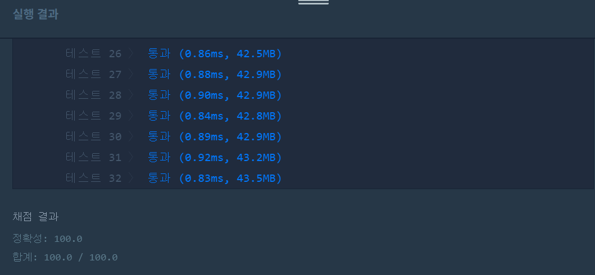

문제
https://programmers.co.kr/learn/courses/30/lessons/17682
( ᐛ )و 도전
1. 설계
- dartResult를 charAt()으로 문자를 하나씩 확인한다.
- 숫자면 int형으로 바꿔서 저장한다.
- D, T가 나오면 제곱, 세제곱을 한다.
*이면 현재 값과 이전 값에 두배를 곱한다.- #이면 -1을 곱한다.
2. 구현 (성공 코드)
/**
*
* @author HEESOO
*
*/
class Solution {
public int solution(String dartResult) {
int answer = 0;
int[] score=new int[3];
int idx=-1;
char ch;
for(int i=0;i<dartResult.length();i++){
ch=dartResult.charAt(i);
if('0'<=ch&&ch<='9'){
idx++;
if(ch=='1'&&dartResult.charAt(i+1)=='0'){
score[idx]+=10;
i++;
}
else{
score[idx]+=ch-'0';
}
}
else if(ch=='D'){
score[idx]=(int)Math.pow(score[idx],2);
}
else if(ch=='T')
score[idx]=(int)Math.pow(score[idx],3);
else if(ch=='*'){
if(idx==0){
score[0]*=2;
}
else{
score[idx]*=2;
score[idx-1]*=2;
}
}
else if(ch=='#')
score[idx]*=(-1);
}
for(int s:score)
answer+=s;
return answer;
}
}
3. 결과
 성공٩(˘◊˘)۶
4. 설명
- dartResult를 charAt으로 문자를 추출한다.
- charAt()으로 뽑은 값은 ch에 저장한다.
- int[] 배열을 이용하여 3번의 게임 점수를 저장한다.
- 숫자가 나오면 n번째 게임 점수를 나타내는 것이므로 배열 인덱스를 하나 증가시켜 새 인덱스에 값을 저장하도록 한다.
- ch가 숫자인지 체크한다.
- ch==1이라면 뒤에 0이 오는지 따로 체크한다.
- ch를 그대로 int배열에 저장하면 아스키코드 번호가 저장되므로 int형 숫자 값으로 바꿔서 저장한다.
- ch가 보너스인지 확인한다.
- S는 1제곱이므로 값이 바뀌지 않는다. 그래서 따로 코드를 작성하지 않았다.
- D는 현재 값에 제곱을 취한다.
- T는 세제곱이다.
- 제곱값은 Math.pow()로 제곱을 계산하였다.
- ch가 옵션인지 체크한다.
*이면 이전 값과 현재 값에 2배를 곱한다.- #은 현재 값에 -1을 곱한다.
- 계산이 끝나면 score배열을 순회하며 최종 합계를 저장한다.
- for-each문을 이용하여 합계를 구했다.
해결 완료!
어려운 문제는 아니었다. 어떻게 하면 효율적으로 작성할 수 있을까 고민해보았는데 그냥 if문으로 모든 경우를 구해서 푸는 게 정석인 것 같다. 처음에는 보너스나 옵션에 따라 split함수로 쪼개서 기회를 나눠볼까 생각했는데, 이러나 저러나 charAt으로 문자를 뽑아야하는 것은 똑같을 것 같아서 split은 사용하지 않았다.